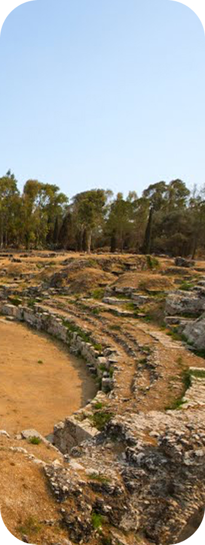

Le origini antiche

L’isola di Ortigia è la culla di Siracusa, fondata nel 734 a.C. dai coloni greci provenienti da Corinto. Qui sorse il primo insediamento urbano, scelto per la sua posizione strategica facilmente difendibile, con acqua dolce (la Fonte Aretusa) e un porto naturale. Ortigia fu il centro religioso e politico della città.
Nel V secolo a.C., sotto Gelone, Siracusa divenne una delle città più potenti del Mediterraneo. Ortigia era il cuore pulsante di questa grandezza. Archimede, nato qui nel 287 a.C., contribuì alla difesa della città durante l’assedio romano con le sue invenzioni ingegnose.